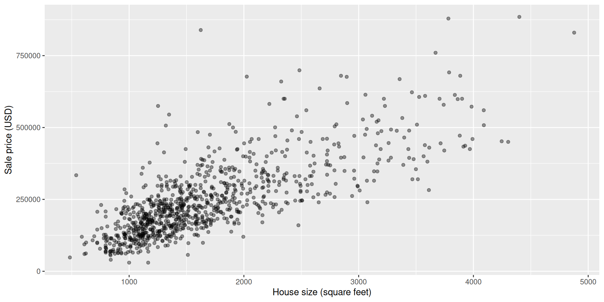
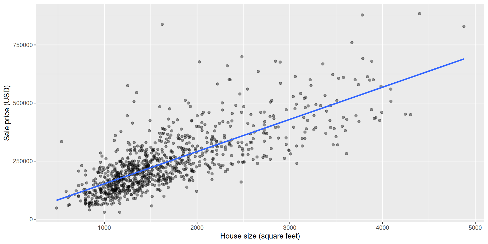

When we want to predict something, the type of outcome tells us what kind of model to use.
Today we’ll fit a linear regression. On Wednesday we’ll fit linear and logistic regressions on medical data.
A model formula like price ~ sqft expects the data to have one row per observation (each house sale) and one column per variable (the price and the size), which is exactly what tidy data gives us.
This is a dataset of house sales in Sacramento, California. It comes with tidymodels, in the modeldata package.
# A tibble: 932 × 9
city zip beds baths sqft type price latitude longitude
<fct> <fct> <int> <dbl> <int> <fct> <int> <dbl> <dbl>
1 SACRAMENTO z95838 2 1 836 Residential 59222 38.6 -121.
2 SACRAMENTO z95823 3 1 1167 Residential 68212 38.5 -121.
3 SACRAMENTO z95815 2 1 796 Residential 68880 38.6 -121.
4 SACRAMENTO z95815 2 1 852 Residential 69307 38.6 -121.
5 SACRAMENTO z95824 2 1 797 Residential 81900 38.5 -121.
6 SACRAMENTO z95841 3 1 1122 Condo 89921 38.7 -121.
7 SACRAMENTO z95842 3 2 1104 Residential 90895 38.7 -121.
8 SACRAMENTO z95820 3 1 1177 Residential 91002 38.5 -121.
9 RANCHO_CORDOVA z95670 2 2 941 Condo 94905 38.6 -121.
10 RIO_LINDA z95673 3 2 1146 Residential 98937 38.7 -121.
# ℹ 922 more rows
\[ \text{price} = \beta_0 + \beta_1 \times \text{sqft} \]
The “best” line is the one with the smallest squared vertical distances between the line and the data points.
══ Workflow [trained] ══════════════════════════════════════════════════════════
Preprocessor: Recipe
Model: linear_reg()
── Preprocessor ────────────────────────────────────────────────────────────────
0 Recipe Steps
── Model ───────────────────────────────────────────────────────────────────────
Call:
stats::lm(formula = ..y ~ ., data = data)
Coefficients:
(Intercept) sqft
13859.4 138.5 # A tibble: 2 × 5
term estimate std.error statistic p.value
<chr> <dbl> <dbl> <dbl> <dbl>
1 (Intercept) 13859. 6949. 1.99 4.64e- 2
2 sqft 139. 3.80 36.5 1.11e-181For every extra square foot, the predicted price goes up by about 139 USD.

\[ Y = \beta_0 + \beta_1 X_1 + \beta_2 X_2 + \dots + \beta_m X_m \]
To use more predictors, we add them to the formula.
Now each slope is how much the outcome changes for one predictor, when the other predictors stay the same.
For the logistic regression we’ll report odds ratios.
Sacramento: from modeldata, loaded with tidymodels.MEDI 504A · chendaniely/MEDI-504A-2026W1-biostats